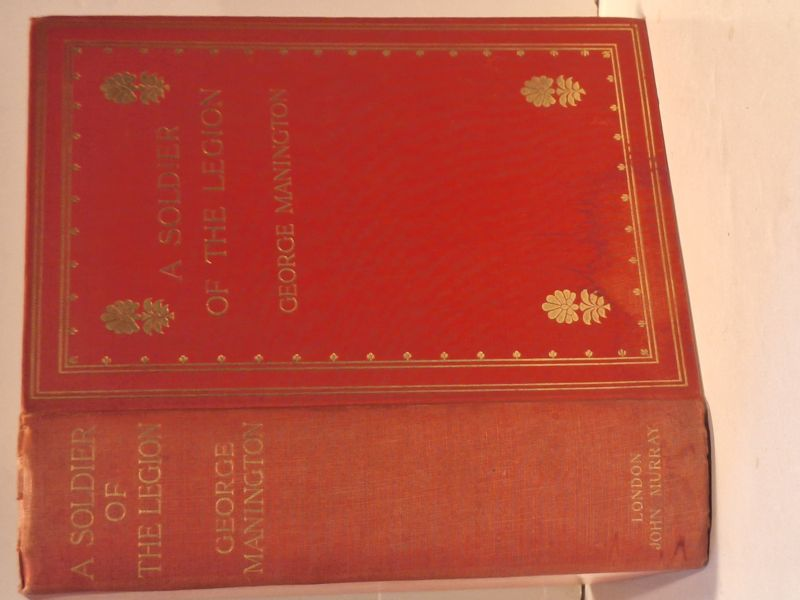

A Soldier of the Legion: An Englishman's Adventures Under the French Flag in Algeria and Tonquin
George Manington (edited by William B. Slater and Arthur J. Sarl) · John Murray, London (Albemarle Street), 1907

C$65 · Good condition
First Edition (John Murray, Albemarle Street, London, 1907). Posthumous publication of George Manington's letters and diaries, edited by William B. Slater and Arthur J. Sarl, with map and illustrations. Publisher's original gilt-decorated red cloth (no dust jacket as issued - typical John Murray Edwardian publisher's binding). Spine reads 'A SOLDIER OF THE LEGION / GEORGE MANINGTON / LONDON JOHN MURRAY'; front board with gilt corner ornaments, ruled border, and central gilt title block. Period provenance: armorial bookplate of J. R. Tweeddale ('It is Social Good Feeling that gives Charm to a Neighbourhood', cottage vignette) tipped to front pastedown; pencil presentation inscription on free endpaper dated Christmas 1913 ('C.C.S. + B.S. with love from H.H.D.'). Binding square and tight, gilt on front board bright. Light wear at head and tail of spine and corner tips; cloth otherwise clean. Manington's account of his service in the French Foreign Legion in North Africa and French Indochina (Tonquin) is a scarce primary-source Edwardian Legion memoir; only one other 1907 first currently catalogued worldwide on AbeBooks at time of listing.
Details
- Publisher: John Murray, London (Albemarle Street), 1907
- Binding: Hardcover
- Edition: First Edition
- Condition: Good
- Category: Military